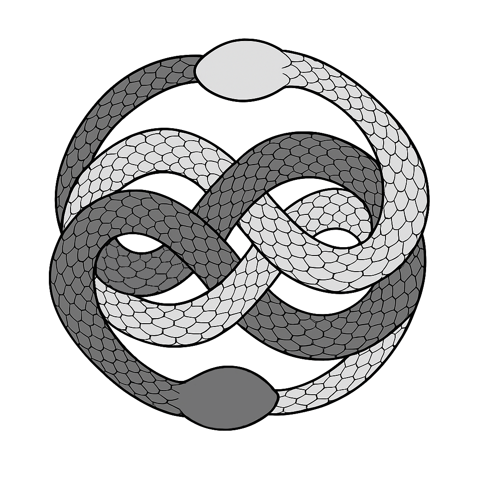

Alicia Franco-Martínez
Person
Researcher
Visitor
Visitor

C
EAM 2021 - Valencia
Oral communication
Loading recovery and reliability in test-data under range restriction.
EAM 2021 - Valencia
Oral communication
On the nature of group factors in bifactor structures.
C
AIIDI 2025 - Madrid (UAM)
Oral Communication
Counterintuitive: Self-Reported Intuition in a Questionnaire fails to predict Behavioral Intuition
RECA 2025 - Madrid (UNED)
Oral Communication
Measurement and sampling noise compromise unconscious inferences in probabilistic learning
C
ASSC 2023 - New York
Poster
Replicating the unconscious working memory effect: a preregistered multisite study
V
PhD Visit · 2024 (3 months)
University College London (UCL)
Supervised by David R. Shanks
V
Research Visit · 2026 (3 months)
Universiteit van Amsterdam (UvA)
Supervised by Makiko Sadakata
Zoom
Grab and drag map